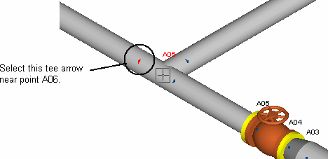

Creating New Points and Using the Copy/Paste Commands
In this section you will create intermediate points on Segment A, and use AutoPIPE’s Copy and Paste
commands to place copies of Segment B at the new points.
- Select the tee arrow near point A06 that lies between the tee and the anchor at point A07.
